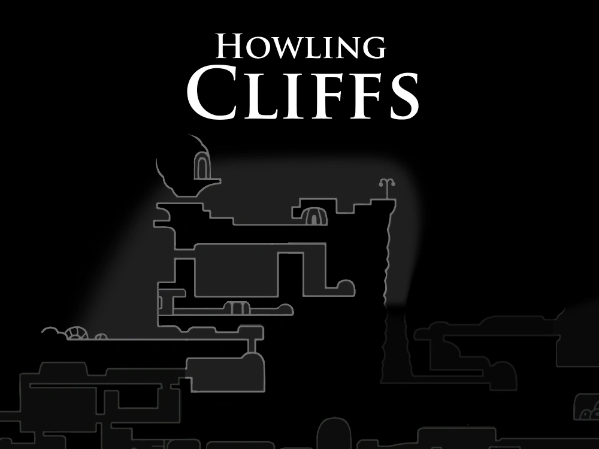

Iselda / Outros
O topo dos penhascos venta fortemente, abrigando misteriosos mestres de habilidades.

Gorb
Um espírito errante que afirma ter alcançado a grande iluminação antes de perecer nos penhascos.

O topo dos penhascos venta fortemente, abrigando misteriosos mestres de habilidades.
Um espírito errante que afirma ter alcançado a grande iluminação antes de perecer nos penhascos.

Um dos lendários irmãos mestres do ferrão que ensina a técnica do Grande Slash (Cyclone/Dash).

Pequenos insetos voadores que resistem aos ventos fortes dos penhascos.